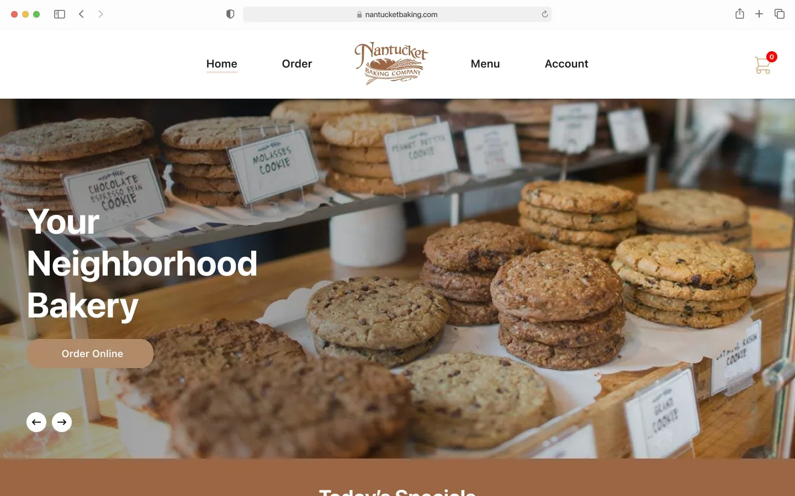
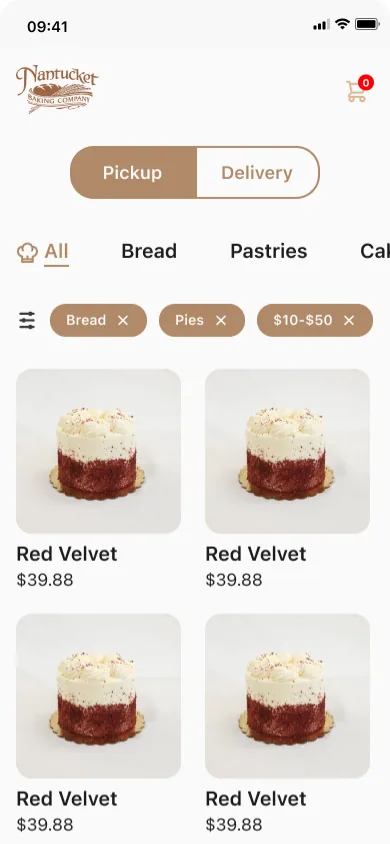

Case study 03 / 06
Nantucket Bakery Website & App
Ordering built for everyone: order ahead, choose pickup or delivery and pay in a few taps, without the barriers of ordering in person.
- Role
- Lead UX Researcher & Designer
- Context
- Google UX Design Certificate
- Deliverables
- Responsive website & mobile app


At a glance
The problem
For people with vision or hearing impairments, language barriers, or mental health conditions that make social interaction or travel hard, ordering from a bakery can be a real obstacle.
The approach
In this solo project for the Google UX Design certificate, I ran accessibility-focused research (interviews, personas, journey maps), then designed a website and mobile app for ordering ahead, with pickup or delivery.
The outcome
High-fidelity prototypes of both the website and the mobile app, designed so people who have difficulty ordering from bakeries can order ahead, choose pickup or delivery, and pay without hassle.
Highlights
- Soloproject, from user research to high-fidelity mockups
- 5roles held, from lead UX researcher to UX writer
- 2high-fidelity prototypes: website and mobile app
Problem Statement
Ordering from a bakery or restaurant isn’t easy for everyone. Vision or hearing impairments, language barriers, and mental health conditions that make social interaction or travel difficult can all stand in the way.
Overview
If ordering in person is the barrier, let people order ahead instead, with pickup or delivery and a hassle-free checkout. This was a solo project: I handled research, interaction and visual design, and UX writing.
Project Goal
My goal was to create a platform, accessible on any device, that lets people who have difficulty ordering from bakeries place orders in advance, choose pickup or delivery, and pay without hassle.
Roles & Responsibilities
Lead UX Researcher, Lead UX Designer, Interaction Designer, Visual Designer, and UX Writer.
User research, persona development, problem definition, user journey mapping, and user stories; paper and digital wireframes and prototypes at low and high fidelity; usability testing; and high-fidelity mockups.
Research
Research reframed accessibility for me: it isn’t only about disability, but also situational and temporary challenges. Interviews kept coming back to slow service, wrong orders, language barriers, and the strain of ordering in person.
Product Users
Accessibility was the focus of my user research, and it taught me a great deal about designing inclusive solutions. Through interviews, personas, journey mapping, and defining the problem statement, I realized that accessibility isn’t only about disability—it also covers situational and temporary challenges. Often, designs made for people with disabilities end up benefiting everyone.
User Needs
My user interviews surfaced several recurring frustrations:
- Slow service, especially for people on a tight schedule
- Wrong orders, whether someone is in a hurry or not
- Language barriers between customers and staff, which can lead to delays and mistakes
- In-person ordering, which can be especially challenging for users with physical or mental disabilities
Common Pain Points
Frustrations users raised with existing online ordering experiences:
- Difficulty using the group ordering feature
- A tiny shopping cart icon that’s easy to miss
- An overcrowded, cluttered layout
User Personas
Website
This is where the goal turned into screens. I took the website from wireframes to a high-fidelity prototype, designed so people can order in advance, choose pickup or delivery, and pay without hassle.
High-Fidelity Prototype (Website)
Interactive prototype
Click through Nantucket Bakery Website & App
Explore the real flows in Figma. The prototype loads on demand to keep this page fast.
Mobile App
A platform accessible on any device meant ordering had to work just as well on a phone. I started with low-fidelity wireframes, then built a high-fidelity app prototype.
Low-Fidelity Wireframes
High-Fidelity Prototype
Interactive prototype
Click through Nantucket Bakery Website & App
Explore the real flows in Figma. The prototype loads on demand to keep this page fast.